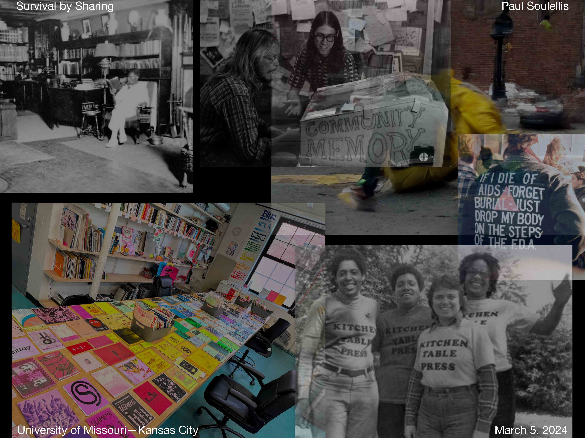
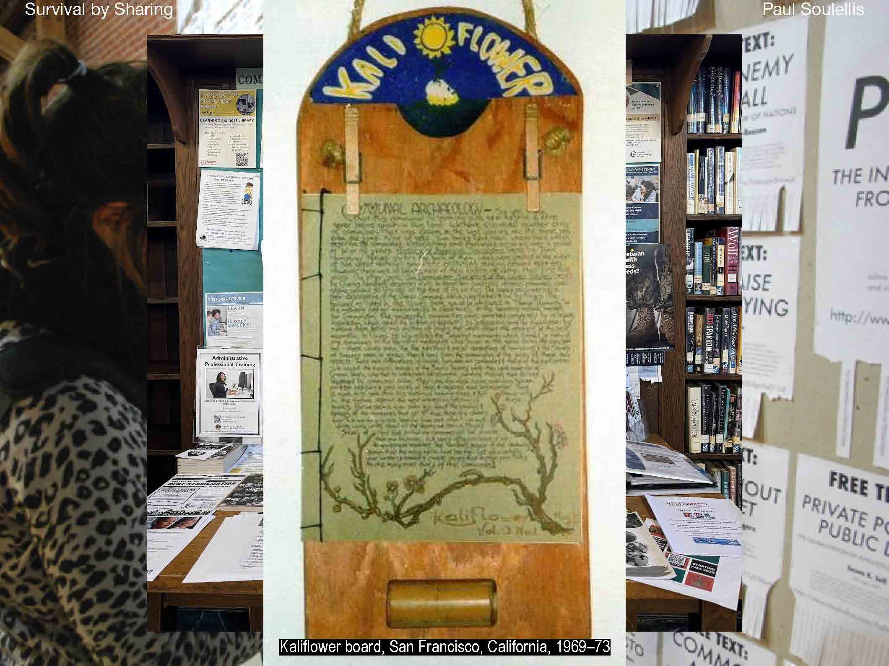
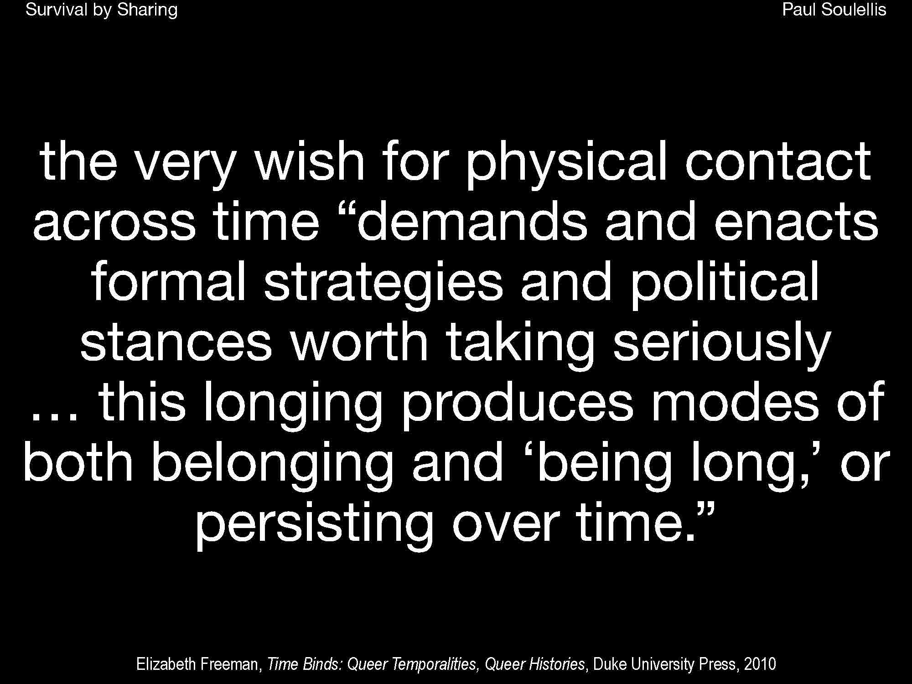

University of Missouri—Kansas City
March 5, 2024
In the spirit of queer timelines, I’ve structured this talk in reverse. We’ll get into it by going backwards, through the title. I’ll start with sharing first, sharing as a way to get into publishing. Then, our destination is survival. The survival of queer life in the archive, across time and space. I’ll conclude with survival.
So, where does survival by sharing come from? It’s a phrase that I’m using a lot lately. I love this expression, because for now, it’s the best way to describe my approach to design, to publishing, to art, activism, and life. Here’s how I found it: one day I was at the Queer.Archive.Work studio, where I was making a publication called resting reader.
I was going through our library and opened up a book by Danielle Aubert on the history of the Detroit Printing Co-op. I saw this logo from Come!Unity Press, from the early 1970s in NYC. They self-described themselves as a gay anarchist printing cooperative, so that got my attention, and then I looked closely at the logo, which they printed on the cover of many of their publications, and realized how beautiful this expression was. This was a group with a radical idea about freely giving away the publications they printed. The expression, as an ethos, kind of unfolded itself to me, and it’s continuing to unfold itself as time goes on, 50 years later, so I’m using it now to both structure and unfold this talk.
I’m the head of the graphic design department at RISD, and I teach graphic design, so you might be thinking, he must be a graphic designer! You would be partly correct. I am a self-taught graphic designer, and for many years I ran a successful design office in NYC where I did a ton of brand strategy, brand identity design, and graphic design. But I don’t really show that work now, at all. The commercial aspects of graphic design, and the powerful connections between visual communication, capitalism, and empire building, are important to acknowledge. My critical perspective on this has grown to such a point that I’m not sure I’ll ever call myself a graphic designer again, but I am grateful that I did for a while, that I know how to shape and manipulate images and language, and I try to use those skills now for other reasons.
Rather than graphic design, I’d like to start this talk with sharing, to describe what I do. Sharing connects to publishing, and publishing can connect to any kind of art and design practice today—publishing as an artistic practice, as a graphic design practice, as an activism or social justice practice, and so on. But why publishing? For me it’s like this: when your medium is publishing, you’re concerned with spreading the word, whatever that word may be: the distribution of ideas across networks, relationships, and community. I see this as a kind of care work, and it’s come to define who I am, and what I do.
It’s been central for me in all of my work, including teaching. I started teaching at RISD ten years ago, with a class called Experimental Publishing Studio. And in that class one of the first ideas that we talked about was this: the community bulletin board. It’s public sharing at the most basic level—posting information in public. This bulletin board isn’t really about graphic design, and yet it’s very much designed: information is being communicated, with intent, and it travels through networks, to everyone’s benefit in the community.
This is a slightly more designed version of the bulletin board that really focuses on the act of posting in public. It was called a Kaliflower board, and you would find 300 of these at different locations around San Francisco in 1969, into the early 70s, in communes. A weekly newsletter called Kaliflower that was published by one of the communes was printed, bound, and then hand delivered to each location, where it was posted on the board for everyone to share. If a message needed to go back out to the publisher, it was left in that bamboo tube at the bottom of the board where it could be retrieved. What a beautiful device!
Those are analog bulletin boards, but here is the very first digital version of that—a computerized bulletin board from the early 1970s. This was an experiment called Community Memory, and it wasn’t really the internet—this was just a lone computer terminal in a record store in Berkeley, California, connected to a single mainframe computer in San Francisco. It’s digital, yes, but still very much a physical presence, an embodied experience shared in public space.
It was kind of an early craigslist, back then, pre-internet, and it was more closely connected to those analog bulletin boards, but seen as somehow more persistent. It was a beautiful experiment in not-forgetting, as the founders originally described, in more poetic terms, and it was the very first of its kind. I’m kind of obsessed with it, because if you read closely through these printouts of the original posts, you’ll find a few gay and lesbian-related posts, and I believe this may be the earliest evidence of queer organizing on a digital platform, ever, just a couple of years after Stonewall.
Today, this is how we post in public. We do this now every minute of every day, on all of our platforms, taking care of all of our feeds. It’s been so normalized now that we no longer think of this, and things like this, as an act of posting or publishing, it’s just a constant, never-ending flow of input and output. Each of us has our own version of this, nurturing our feeds. Posting in public is a mindless task now, so one of the goals of experimental publishing, I think, is to slow this down and work with making public itself as a medium, both in physical space and on digital networks. When we connect people through our work, we can create publics.
If you’re interested, there’s a lot more to say about this, starting with Michael Warner’s essay, Publics and Counterpublics. It’s over 20 years old but it’s such a foundational piece for me, for understanding what it means to create publics around your work—it’s a different way to get into publishing. It’s not about the publishing industry, and it’s not really about making objects, like a zine or an essay or a flyer or a selfie, but about how these things circulate. And what happens when they do. Who they touch, the discourse they generate, and the impact they have.
Social media feeds are where many of us go to do that now, to circulate our material. Even though that seems new, the feed has been around for a long time; it’s a product of the industrial revolution but it’s quickly evolving into something else now, in late-stage capitalism. I went looking for the origin of the word feed, relating to a flow of information, and it seems to appear suddenly in the 1840s, around the invention of the telegraph. It’s also the moment when photography first appears, as colonialism was flourishing, and as networks were forming and expanding globally. Eventually, these media technologies evolved and converged on the feed—first as news wires, radio broadcasts, and television feeds, and now on all of our devices.
This is what our feeds are turning into today; we see them less and less, and we don’t recognize them anymore as an accumulation of posts. We experience them more like an ambient presence. If you think about the engineering behind a device like this, it’s still about posting, in this case a request, and replies are posted back immediately. But the experience is becoming smoother than that. More and more, it’s not an interface of buttons and boxes, but of natural language. And of course, this is exploding in AI, as well—natural language prompts that are posted and the incredible responses that are seamlessly returned, like magic.
Those distinctions between what is or is not posting, or publishing, or public or private, are becoming very ambiguous. As we engage with non-stop streaming that surrounds us in a totalizing way, throughout all of our environments, we’re seeing this collision and collapse between publishing, digital networks, AI, and surveillance.
And this convergence isn’t going anywhere. It’s becoming more and more ubiquitous and accepted. It’s a desire that we seem to have right now, societally, to protect ourselves with algorithms of seeing and listening, and the ideologies of profit and power that go along with them.
It’s crucial that we try to understand how this all works. The politics of our platforms. How the same streaming, always-on platforms that enable us to post and publish and entertain and protect and isolate ourselves—are the very same technologies being used by the state to profit and to persist, to surveil, to minoritize, and to criminalize.
It’s the ultimate smooth flow of interfaces that know us and envelope us now that I’m most concerned about. Not because I don’t enjoy them—but because I do—while at the same time knowing that not all of us are subjected to the violence of our accelerated techno-future in the same ways. For designers, we find ourselves in a very particular contradiction here. How do we participate in this? How do we continue to design these most perfect interfaces, knowing what we do?
These are questions that I grapple with, as an educator, as an artist, as someone who’s deeply invested in how design participates in our political condition right now. My own battle with this takes the form of a demand: to resist the smoothness of design perfection. I make this demand of myself and in my teaching. It means always questioning. More than that: it means always deeply examining the less visible ideologies that lurk behind the design systems that govern how we live and communicate.
For me this also means working with archives as time machines, and dialing back through history to see how others have resisted and persisted by making public against the grain, by “performing publishing” in their lives. What can we learn from their ongoing struggles for liberation, through their acts of making public? I’m especially inspired by Barbara Smith, who was part of the Combahee River Collective in Boston in the 1970s, and who co-founded Kitchen Table: Women of Color Press in the early 80s.
There’s a lot to learn from her, but specifically around publishing, there’s this quote. In an oral history she’s talking about a conversation she had with the poet Audre Lorde, about why she started Kitchen Table. She says, “As feminist and lesbian of color writers, we knew that we had no options for getting published, except at the mercy or whim of others, whether in the context of alternative or commercial publishing, since both are white-dominated.”
I’m also deeply inspired by Alexander Gumby, a gay man in the 1920s Harlem Renaissance who had a prolific scrapbooking practice. In these scrapbooks he documented Black American life and culture through clippings and ticket stubs and photos and ephemera. They’re just incredible objects that persist as evidence of life. In 1924 he moved all of the scrapbooks into a studio in Harlem and started holding salons, where people would gather, and he would share the books.
There in that porous, queer space, Gumby’s Book Studio was a living, public archive, cared for by its creator but kept alive through the relationships that gathered around the ephemera. There, community memory formed around the information, in this case an archive of snippets. A early, queer destination. This was “queer materials in queer hands.” In 1950, Gumby left his collection of over 300 scrapbooks to Columbia University to be cared for, where they can be visited today. Scans of several pages of the scrapbooks are available online. Gumby died in 1961, but his work persists through these books.
Another making public strategy in the ongoing movement towards liberation is using visibility to interrupt the narrative—as The Black Panthers did by distributing newspapers openly in public space. In the moment of exchange was an opportunity to engage directly, person-to-person, on a street corner, in a laundromat, at a diner.
This idea of interference is also why I love David Wojnarowicz’s jacket so much. He wore it to an ACT UP demonstration at the height of the HIV/AIDS pandemic. It’s an act of protest, it’s art, it’s a gesture of making public—it’s an urgent artifact that contains the potential for radical action. As an act of publishing performed on the body in public space, it’s the plea of a political subject struggling in illness against state negligence, for communal responsibility and care. It’s a call to action and a fight for life.
Today, we find evidence of urgent artifacts like these everywhere. Using visibility to agitate. Parker Bright did this by using their body as a platform to both obscure the view of Dana Schutz’s controversial painting of Emmett Till and to deliver the message “Black Death Spectacle” to an audience who photographed and posted the message all over social media, forever changing our read of the painting.
This is how making public can get radical, how publishing as an independent pursuit can be used to empower its authors and organizers and distribute that power through the materials that they circulate. Radical publishing has been used throughout history as a form of survival, as a way to detach from mainstream structures of oppression in academia or commercial publishing, where whiteness, heteronormativity, capitalism, and settler colonialism are continually normalized.
In their essay, “Zine”—Mimi Thi Nguyen writes that “small scale self-publication challenges the supposed universalism of democratic cultural formations through an alternative form of public address.” These counterpublics served by the zine, or the scrapbook, or the modified jacket, or the small press pamphlet—moments like these show us how values like collective care and collaboration and sharing were fundamental to radical publishing’s agenda of connecting with community in crisis. These urgent artifacts persist.
Most of the examples I’ve shown involve visibility—the ability to use one’s body and to have it read clearly and legibly. For many bodies the privilege of visibility isn’t a safe strategy at all. And so refusal and illegibility are also tactics for us to look at here, in radical publishing. There’s a whole range of artists who work against visibility today, particularly in the fight for racial, transgender, mental health, and immigration justice.
Refusal and illegibility are concepts I think about a lot in my own work, especially in relation to queer typography. This is a zine that I published, titled “What is queer typography?” that’s probably my most circulated work because there’s a real vacuum when it comes to queerness and design, and this little zine that I made in 2021 has gone far and wide. It’s being found by people who are frustrated with the same old design stories that reward legibility, exceptionalism, and perfection, again and again. It’s an accounting of the ways that design and typography have been used against the grain throughout queer history—for other kinds of making public, and where I get to is this: that there is no queer typography, only queer acts of reading and writing. Right now, I’m focused on those acts and the tools and conditions and evidence surrounding them, trying to bring these queer strategies of resistance and survival into my own spaces, whether it’s my artist’s practice, or in teaching, or in community organizing.
And so, as we work backwards through this talk, through Survival by Sharing—we started with sharing—we now arrive at the “survival” part of the talk, as I get into my work and the ideas that I’m exploring right now.
In my own publishing practice I’ve been exploring the ability to print and produce materials myself, with a risograph printer that I purchased in 2018. So here are some images of various publications I’ve put together during the last few years, under the name Queer.Archive.Work.
This project has really shifted who I am and how I work, a pivot that’s directly inspired by the examples I’ve mentioned today and others—a more political view of what’s possible with publishing, how one spreads the word, and how we can do more, with collective work. These are all collaborative publications, working with one or more contributors, sometimes over 100, like in Urgency Reader 2, which was produced at the very start of the pandemic.
Most of these are unbound publications, which means everything’s loose. Queer.Archive.Work #3 is an assemblage of prints and zines, and they can all come apart, without fixing any one read. The idea here is really to forfeit control, from my role as editor, to the reader, encouraging them to stay with the mess, and get comfortable with a non-linear space, so they can explore a multiplicity of voices, as they wish, in their own time.
And you can also see this at work in my installation at the NY Art Book Fair in 2019, when the publication launched. There, I tried to design the installation so that the mess would read as an invitation, perhaps only legible to some. This wasn’t about projecting an easily understood queer aesthetic or style, but about inviting specific readers in to do their own work, and shape the material in unexpected, unpredictable ways.
I love these publications, and the communities and agreements that are formed within them and from them, as we learn to put our work in conversation together.
In 2020, I made a major decision to move the risograph printer into a new studio, and to transform Queer.Archive.Work from a publishing *project* into a shared publishing *space.* Queer.Archive.Work became a non-profit organization, with a mission to support queer publishing, and to center queer, trans, and BIPOC voices who need access to studio space and publishing tools and community.
The heart of the space is the risograph printer as a tool of empowerment, as a way to make public and spread the word on our own terms, outside of traditional publishing and art world spaces. By traditional I’m even including the so-called “alternative” or indie publishing scene, which is still so often white, and cis, and male, and privileged.
An important part of the project is our non-circulating library, which has grown to over 1,500 items since we began, with zines and books and examples of experimental publishing that I’ve been collecting and that people send to us and contribute when they print in the space.
June Jordan wrote about the library as a sanctuary from the spectacle. This is our library today, feeling so spacious and welcoming, a real sanctuary. A place to grow the collection and let it expand into a shared destination, a place to navigate terms like queer, and archive, and work, and imagine new ways to think about them.
In 2021, we joined forces with Binch Press, an artist-run print collective that shares our values and our commitment to community, and we built a new studio together. What a beautiful moment this has been! Our studio now has a huge garage door that opens up the entire space directly to the street. We can distribute, hold events, and experiment with new ways of making public.
The space changes every day, depending on who’s here and what’s happening. It’s a queer place for about 50 residents, members, and organizers, without many of the pressures that you’d encounter in academia or traditional art world spaces, or even in some alternative art spaces.
The whole project has been such a sanctuary for us, far from spectacle, but it’s not a hiding place. We gather, hang out, browse, read, write, and rest, in a porous presence with each other. But we’re also building something, support structures for living and working in crisis and thriving in community. We organize, learn, teach, practice, print, make, nourish, and laugh together.
This is new work for me. I grew up on Long Island in New York in the 1970s and 80s, raised to believe in the individual, the empowered artist or designer or business person, the lone figure of exceptional success. What I learned was this: trust no one, protect yourself, be ambitious, rise to the top. So, I’m really trying to shift this now in my work, from me to we. No rising, just reaching around and stretching with others.
Collective work is hard, but it’s happening. I’m learning about communal power. We’re learning to collaborate in new ways, to write a new studio code of conduct, and to build the print production studio of our dreams.
I don’t think there’s any real way to do it except to do it. It’s queer work, because each time we gather together without guarantees or predictable results or a hero leading the way forward, we push up against heteropatriarchy and refuse to play by those old rules.
Another thing we do in the library is publish, of course. We have a full screen-printing studio and now, several Risograph printers right there next to the shelves in the library, and a full rainbow of color ink drums.
The risos are connected to a networked computer so we can send PDFs to print but I also really like to scan things directly on the flatbed. Sometimes I don’t use InDesign, or grids, or much design at all, just the riso printer itself as a camera that sees whatever I bring to the glass. It’s such a beautiful machine, and I can use it to scan the library, one page at a time.
This seeing-printer is how I made resting reader, mentioned at the very start of the talk. All of its pages come from our library shelves. I printed 100 copies, and bound them on our perfect binder. The texts came together quickly while covid was raging in December 2021. We had to stay isolated at a moment when we really wanted to engage, so I found ways to connect in the sanctuary. Gathered together in resting reader are these partners in time travel: Kendrick Daye, Kevin Quashie, Barbara Smith, June Jordan, 3rd World Gay Revolution, Dean Spade, The Care Collective, be oakley, Lin Marie Tonstad, adrienne maree brown, Thista Minai, Demian DinéYazhi', Alok Vaid-Menon, Sylvia Rivera, The Spore Liberation Front, Eli Nixon, David Griffiths, noraa neither kaplan, Sara Ahmed, bell hooks & K Laster, Danielle Aubert, and the gay graphics collective. This book is evidence of a moment, an ongoing moment. It’s time travel because it contains the past, but it’s about the future. Welcome to its future.
I decided to put “survival by sharing” on the cover of resting reader—that was the first time I used it. I’m trying to revive that Come!Unity Press phrase now, as a guiding ethos, fifty years later, in works like this, in this talk, in a previous version of this talk that I presented in Korea last summer, and in everything we do at the Binch/QAW studio.
Providence is well-known for its exclusive institutions that attract talent from around the world, like RISD and Brown University, but we also have a deep, parallel history of independent, radical spaces for creative living and making, from Fort Thunder, maybe the most well-known one, to AS220 to Dirt Palace to the brand new Lost Bag—all focused on local folks who work right here in our community. This is difficult work, because it’s the slow, ongoing work of communal care, away from institutions that use speed and highly visible results as a form of gatekeeping, as a way to make thoughtful, cooperative decision-making very difficult.
During the pandemic, I talked a lot about these queer strategies of resistance and survival as a set of principles, and I called it urgentcraft. Here are those principles. Simply put, it’s about prioritizing anti-racism, design justice, and communal work in whatever you do. I’m touching on some of these principles today in this talk but not all of them, so please, spend some time with this, and consider it my call to action for you. Use these principles of urgentcraft, re-shape them, add to them, share them. If nothing else, keep them around, as a reminder that art and design can be used to loosen power.
Today, I’m adding a new principle to urgentcraft, one that I’m most focused on right now—and it’s this: “practice being long.” What does this mean? I get the term “being long” from Elizabeth Freeman, who writes about connecting with queer ancestors, in her book Time Binds. She’s actually referring to the wish for physical contact across time. I mentioned time travel earlier, in the QAW library. Being long is very much about survival, longevity, and the persistence of queer life across time and space. Recently, I’ve been thinking a lot about how to do this exactly. I’ve been thinking about entanglement.
As I head towards the conclusion of this talk, I’m going to divert, for a few minutes, and tell you a story about this work that I’ve been doing right now, around “being long” and entanglement, and how this connects to radical publishing.
In quantum physics, entanglement happens when one particle is intimately connected with another, and actually can’t be described independently, without the other. The correlation between the two particles persists through time and space, even across large distances. It appears to be magic, and it can only be explained by the smallest units of energy that are behaving weirdly, according to their own rules, rules that seem to go against everything that we’ve come to know about time, space, and gravity. I have always suspected that there’s something queer going on here, in this relational magic and weird behavior at the quantum scale, and that queer kin might have access to entanglement, like this. Or that we might at the very least be inspired by it. We exist, after all, in opposition to the chrononormativity of linear straight time. Queer time stops, it reverses, and it starts again; it skips and repeats; it resists the patterns and routines of conventional time structures. What if we could connect, intimately, to ancestors from another time.
I was in an accident recently, a little over a year ago. I tripped while walking downhill, which caused me to fly headfirst into a stone wall. I broke 12 bones. I’m fine now, but in the months of healing that followed, I had time to think about what it might mean to become an ancestor myself. My own body brought me closer to, although not quite to the end of, my own timeline—enough for me to experience a new, heightened awareness of the boundaries of both bodies and timelines.
For an unknown amount of time immediately after the accident, I was laying, grounded on the sidewalk, unconscious in public, until I was found by someone who called for help.
As I recovered, I tried to make sense of this particular gap, this black-out, and I began generating images to “reconstruct” the accident. From my hospital bed, I started feeding the details of the event into a text-to-image generator. I tried to become a separate, outside observer who had the power to rewind time and playback the recording, again and again. In the repetition, I wanted to see if these images might reveal something, an opening, if they might visually locate my absent body in time and space in a way that was impossible from memory alone. I thought, maybe foolishly, that these images might show me what had really happened, and allow me to repair my timeline. I generated thousands of these images, and they started to resemble an archive. This was my way of slowing down what had happened. I wanted to occupy the space of that moment, and it felt like this tool could help me. I’m still not sure what I found in these images, but they did help me to heal.
Hito Steyerl calls these AI images produced without a camera “mean images;” that is, that they form an approximation. You train the diffusion model with a dataset of images, and it returns averages. She says that these renderings represent “averaged versions of mass online booty.” The images emerge from random noise. It’s a very strange sensation then, to go looking for your own body like this, looking for yourself as an approximation, emerging from a random database of bodily forms.
That sensation however, proved to be addictive, for me, and soon after, I started looking for other bodies, not just my own. I messaged the Midjourney bot on Discord, writing prompts for queer bodies throughout history, trans bodies, scenes of life happening in queer spaces. I asked for images of men in love, trans women, gay bodies embracing—queer images from other times, when it would have been impossible to make real photographs like these.
They felt like things I needed to see. They felt like things I’d seen before. They reminded me of artifacts in archives, and I wondered if these images, which seemed to contain a real capacity for stirring emotion, might help to repair our fractured, queer history.
I struggled with the next steps. Should I print these images? Should I publish them? I posed these questions to colleagues and we debated the value and ethics of the project. I couldn’t stop generating. Looking now at the sheer quantity of images that I produced, it’s clear that I had confused a real longing to connect and to persist through time, with a desire to manufacture my own queer ancestors as objects, as if I could simply collage them together without any real stories attached.
At some point, I started asking more critical questions, like—why does it only generate white bodies, unless I ask it not to? Why does everyone look so similar? Why do these scenes, never before seen, look so familiar? I questioned whether these images could generate anything of value at all, or if their sole purpose was to reflect my own desire back to myself, the desire of an older gay white man who wants so badly to make contact with gay life before and during the HIV/AIDS crisis, another time in my life when I was also very much “unconscious in the street.” In my wish to “enliven the dead” and become intimately entangled with queer ancestry, I found myself desiring false bodies and empty narratives. In conversation with a database that points to nothing, really; like my hallucinated AI visions of my accident, they create an archive that refers only to itself.
Here’s my wish: that within the failure of queer time (the failure to move along linearly, predictably, logically), we might discover shared moments where connection and coherence really is possible, entanglement across large temporal distances. In those shared moments, bodies—and queer kinship—can be found. Elizabeth Freeman writes that the very wish for it—for physical contact across time—“demands and enacts formal strategies and political stances worth taking seriously,” and that “this longing produces modes of both belonging and ‘being long,’ or persisting over time.”
It’s this “being long” and persistence that I’m after here, a longing for the circuitry that lights up large expanses of the timeline where queer family convenes, always both here and there, both past (passed) and present. How do we conjure such queer kinship? How do we establish contact when the ones we long for are long gone?
I’ve been doing it in the archive, looking for generous acts of radical publishing. In a quantum approach to queer history, my own unconscious body in the street and the Community Memory computer terminal and Queer.Archive.Work and Barbara Smith and Alexander Gumby and Come!Unity Press and all of us right here, reading this text, all exist together, suspended in the same moment, both alive and dead. They exist as I’ve assembled them here, in simultaneously combined moments of tender “survival by sharing” that span many decades. I was unable to actually observe some of these characters in real lived time, but in my longing I can convene them now in queer time; doing so anchors and grounds me (and maybe others, and maybe some of you). In my longing, I stitch together these larger trajectories of queer ancestry that might otherwise be forgotten or discarded, through these persistent artifacts of radical publishing.
Archives are good places for this kind of work, because they’re both time machines and dead ends, places where neglected evidence survives, out of view, “unconscious in the archive.” Archives are also sites of violent exclusion, oppression, and erasure, but we don’t need AI to make those repairs, as I’ve discovered. Instead, I’m turning my attention to the bad, wayward archives outside of institutions, illegitimate collections where we can light up new circuits. I’m looking for porous openings now, to become entangled with these precarious moments of generosity and tenderness, so that they might connect us to future ways of living.
Without our interference, these small units—these interdependent queer acts of care—are otherwise bound to disappear. The entanglement happens because we’re in the archive, looking for it. The entanglement happens because we’re open to disruptive forms of making public, and to writing new stories.


